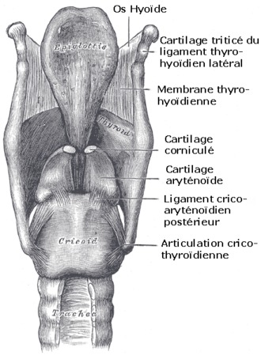
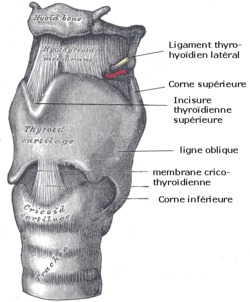
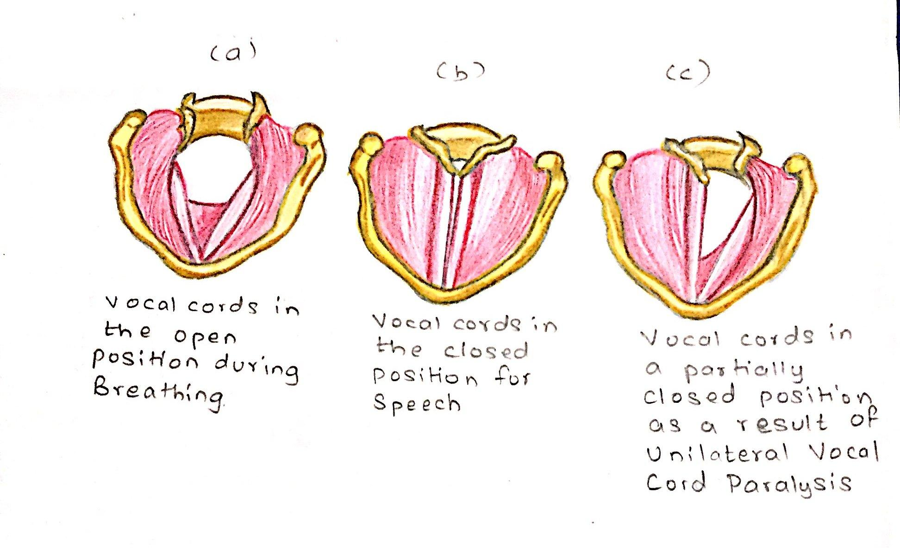
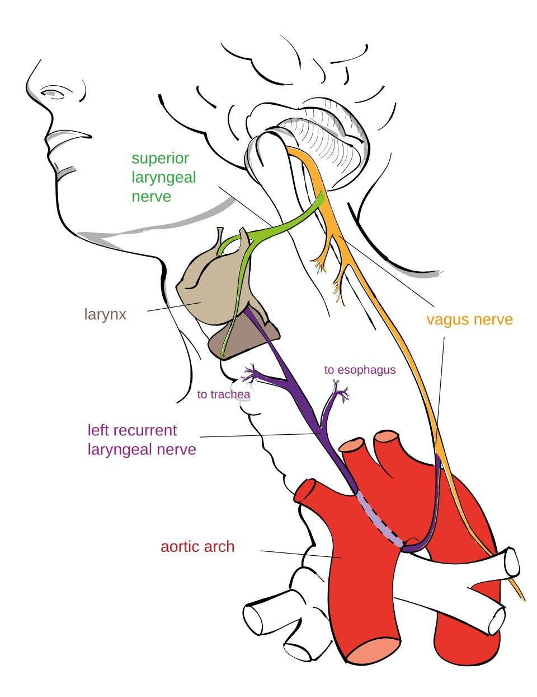
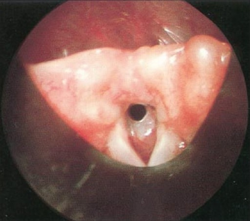
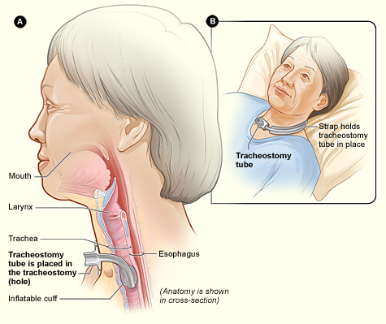

| Konu | Bilateral abdüktör vokal kord paralizisi — endikasyon, zamanlama, posterior transvers kordotomi tekniği, alternatif cerrahiler ve karşılaştırmalı sonuçları |
|---|---|
| Sistem | Larengoloji — hava yolu cerrahisi |
| Süre | ~30 dakika |
| Kaynak | Önerci Cilt 5, Bölüm 42 (Baş Boyunda Lazer Cerrahisi, b.521-525) · Bölüm 52 (Vokal Kord Paralizilerine Yaklaşım, b.619-621) · Bölüm 21 (Larinks Benign Hastalıklar) · Bölüm 48 (Faringeal Yutma Bozuklukları) · PubMed 2022-2025 · Gün 31 ve Gün 66 notları |
Kordotomi bir hava yolu ameliyatıdır, bir kanser ameliyatı değildir. Kordektomi ile karıştırılmamalı: kordektomi tümörü çıkarır, kordotomi nefes yolu açar.
Endikasyonu tektir: semptomatik bilateral abdüktör vokal kord paralizisi. Kordlar paramedyan kilitlenir; hasta konuşur ama nefes alamaz.
Amacı: hastayı trakeotomiden kurtarmak ya da dekanüle etmek. Kitabın tanımıyla: “ses kalitesinde minimal bozulma ile posterior glottik hava yolu alanını genişletmek”.
Tekniği: süspansiyon laringoskopi altında, aritenoidin vokal çıkıntısının hemen önünde, CO2 lazerle iç perikondriyuma kadar uzanan transvers kesi. Bant ventrikülün kesiye katılması başarıyı artırır.
Kritik iki kural: interaritenoid mukoza korunacak (yoksa posterior glottik sineşi) ve kontrollü kesilecek (kesi geri dönüşsüzdür; az kesip eklemek, çok kesip pişman olmaktan iyidir).
Bu iki isim birbirine çok benziyor ama amaçları taban tabana zıt. Karışıklık asistanlıkta sık, sınavda da sık sorulur.
Kordotomi ve kordektomi — aynı köke benzeyen iki zıt ameliyat. (Görsel bu not için çizildi; Önerci Cilt 5 Böl. 42 temelli.)
Spinal kordotomi (nörocerrahi): dirençli kanser ağrısında spinotalamik traktusun kesilmesi. İsim benzerliği dışında KBB ile hiçbir ilgisi yok. Literatür ararken “cordotomy vocal fold” ya da “posterior transverse cordotomy” yaz, yoksa sonuçlar ağrı cerrahisiyle dolar.
ELS kordektomi sınıflamasını hatırlatmak gerekirse — Önerci Cilt 5, Böl. 42, b.523-525:
| Tip | Adı | Ne çıkarılır | Kullanım |
|---|---|---|---|
| 1 | Subepitelyal | Mukozanın tüm katmanları + lamina propria yüzeyeli | Çoğunlukla tanısal; ses etkilenmesi minimal |
| 2 | Subligamentöz | Vokal ligaman + kasın az sayıda yüzeyel lifi | Stroboskopide dalga yok, infiltre düşünülen lezyon |
| 3 | Transmüsküler | Mukoza, submukoza, ligaman, vokal kas | Kord hareketi bozulmamış yüzeyel kanser |
| 4 | Komplet | Vokal proçesten ön komissüre, iç perikondriyum dahil | İnfiltratif tümör; anterior komissür tutulu olmamalı |
| 5a-d | Genişletilmiş | a: ön komissür · b: aritenoid · c: bant ventrikül · d: subglottis | T1b dahil, komşu yapılara uzanan tümör |
Avrupa Larengoloji Cemiyeti kordektomi sınıflaması. Kaynak: Önerci Cilt 5, Böl. 42 “Baş Boyunda Lazer Cerrahisi”, b.523-525 (Remacle 2007).
Kordotominin bütün mantığı tek bir anatomik gerçekten çıkar: glottis fonksiyonel olarak ikiye bölünmüştür.
Kordotominin tüm mantığı: hava arkadan, ses önden. Kesi arkaya yapılır ki ses üreten membranöz ön 2/3 korunsun. (Görsel bu not için çizildi.)
| Bölge | Yapı | İşlev | Kordotomide |
|---|---|---|---|
| Ön 2/3 | Membranöz kord — vokal ligaman + tiroaritenoid kas | Ses — mukozal dalga burada oluşur | Dokunulmaz |
| Arka 1/3 | Kartilajinöz glottis — aritenoid vokal çıkıntısı hizası | Hava — inspirasyonda asıl açıklık burası | Kesi burada |
| İnteraritenoid | İki aritenoid arası mukoza | Arka duvar bütünlüğü | Mutlaka korunur |


Önerci Cilt 5, Böl. 52, b.620-621 endikasyonu tek paragrafta veriyor:
“Vokal kordların orta hatta yakın pozisyonlanması ve inspirasyonda abdüksiyonla laterale yer değiştirememeleri, bu hastalarda esas semptom olan eforla artan inspiratuar stridora neden olur. Semptomatik hastalarda tedavi cerrahidir. Cerrahi yöntemlerin amacı ses kalitesinde minimal bozulma ile posterior glottik hava yolu alanını genişletmektir.”
Böl. 42, b.521 aynı sorunu daha doğrudan koyuyor: “Vokal kord bilateral abdüktör paralizilerinde sorun yetersiz glottik açıklığın sebep olduğu solunum güçlüğü ve hava açlığıdır. Tiroid cerrahisi sonrasında komplikasyon olarak da izlenen bu durum eski dönemde çoğunlukla trakeotomi gerektirmekte idi.”

Dört paralizi tipi ve tedavi karşılıkları. Kordotominin yeri yalnızca en sağdaki kutudur. (Görsel bu not için çizildi; Önerci Cilt 5 Böl. 52 temelli.)

Paramedyan kilitli kordlar her zaman paralizi demek değildir. Kordotomi mekanik fiksasyonda ve posterior glottik stenozda beklenen sonucu vermez. Önerci Böl. 21 bu ekartasyonu şart koşuyor: “…ayırıcı tanıda yer alan krikoaritenoid eklem fiksasyonu ve posterior glottik stenozun değerlendirilmesi için [genel anestezi altında laringoskopi ve bronkoskopiye] ihtiyaç duyulabilir.”
Ameliyat öncesi ayırıcı tanı akışı. (Görsel bu not için çizildi; Önerci Cilt 5 Böl. 21 ve Böl. 52 temelli.)
Bilateral paralizi tanısı koymadan önce, stridorun kaynağının glottis düzeyinde olduğundan emin ol. Subglottik ve trakeal darlıklar aynı sesi çıkarır ama kordotomiden fayda görmez — hatta gereksiz bir kordotomi hastanın sesini bedava kaybettirir.


Kordotomi geri dönüşsüzdür. Bu yüzden erken dönemde acele edilmez — spontan düzelme şansı beklenir. Önerci Böl. 52 reinnervasyon için “paralizinin dokuzuncu ayından daha önce yapılmaması” diyor; aynı bekleme mantığı destrüktif cerrahiler için de geçerli.
Bilateral abdüktör paralizide zamanlama. Kalıcı cerrahi en sağda — çünkü geri dönüşü yok. (Görsel bu not için çizildi; Önerci Cilt 5 Böl. 52 temelli.)

Önerci Böl. 52, b.621 dört ana yöntemi sayıyor, beşincisi gelişmekte: “En yaygın kabul görmüş olan cerrahiler; posterior kordotomi, parsiyel/total aritenoidektomi, sütürle kord lateralizasyonu ve modifiye sütürle aritenoid lateralizasyon teknikleridir. Bu tekniklerin mümkün olduğunda endoskopik yol ile uygulanması tercih edilmelidir… Son dönemde ise bilateral selektif reinnervasyon yöntemlerinin sonuçları sunulmaya başlanmıştır.”
Bilateral abdüktör paralizide beş cerrahi yöntem ve geri dönüşlülük ekseni. (Görsel bu not için çizildi; Önerci Cilt 5 Böl. 52, b.621 temelli.)
| Yöntem | Ne yapılır | Avantaj | Dezavantaj | Geri dönüşlü |
|---|---|---|---|---|
| Botulinum toksini | Addüktör kaslara direkt görüş ya da LEMG eşliğinde enjeksiyon | Erken dönemde ve cerrahi kabul etmeyende kullanılabilir; girişimsel değil | Tekrar gerekir; her hastada etkili olmaz; kazanılan açıklık minimal | Evet |
| Sütürle kord lateralizasyonu | Membranöz vokal kord sütürle dışarı çekilip bağlanır | “Daha kolay, hızlı, ucuz ve güvenli” — bu yüzden sık tercih edilir | Membranöz kord medyalize olduğu için tekrar kapanma yüksek; özel alet gerekir; fibrozis/granülasyon öngörülemez | Teorik olarak |
| Sütür aritenoid laterofiksasyonu | Membranöz kord değil, vokal çıkıntı seviyesinde lateralizasyon; sesi korumak için önüne transmüsküler kordotomi | Maksimum posterior açıklık + kord fizyodinamiğine uyum; özel alet gerekmez; sütür submukozal gömüldüğü için granülasyon riski düşük | Teknik olarak daha zahmetli | Kısmen |
| Posterior kordotomi | Vokal çıkıntının önünde transvers kesi; ± bant ventrikül | Yüksek dekanülasyon; aritenoid korunur; lazerle kanamasız | Geri dönüşsüz; ses kaybı; granülasyon; revizyon gerekebilir | Hayır |
| Parsiyel/total aritenoidektomi | Aritenoid kıkırdak eksize ya da lazerle ablate edilir; üzerindeki mukozal flep sahaya geri sütüre edilir | En geniş açıklık; kordotomiye göre ses sonucu daha iyi bildirilmiş | En agresif; geri dönüşsüz; dekanülasyon oranı biraz daha düşük | Hayır |
| Bilateral selektif reinnervasyon | Posterior krikoaritenoid kasa yeni sinirsel uyarı | Doku yıkımı yok; fizyolojik çözüme en yakın | Sonuçlar yeni sunulmaya başlandı; dekanülasyon meta-analizde 0,69 ile en düşük | — |
Yöntem karşılaştırması. Kaynak: Önerci Cilt 5, Böl. 52 “Vokal Kord Paralizilerine Yaklaşım”, b.621; sayısal veriler bölüm 10'daki literatürden.
Meta-analizde yöntemler arasında dekanülasyon farkı yok (p = 0,15). Yani “hangisi daha çok dekanüle eder” sorusu karar vermez. Karar iki eksende verilir:
Kaynak: Önerci Cilt 5, Böl. 42 “Baş Boyunda Lazer Cerrahisi”, b.521-522. Kitabın ameliyatı özetleyen cümlesi:
“Lazer ile vokal kord posteriorunda, iç perikondriyuma kadar uzanan bir kesi yapılması (posterior kordotomi) rima glottisi genişleterek yeterli hava açıklığını sağlamaktadır. Bant ventrikülün eksizyona eşlik etmesi, glottik sfinkterde daha büyük relaksasyona yol açarak ameliyatın başarısını artırmaktadır. Glottik açıklığın seviyesine göre tek veya çift taraflı yapılabilir.”
Kesi yeri, bant ventrikül eklenmesi ve derinlik sınırı. (Görsel bu not için çizildi; Önerci Cilt 5 Böl. 42, b.521-522 temelli.)
| # | Adım | Ayrıntı |
|---|---|---|
| 1 | Anestezi ve lazer güvenliği | Ameliyatın yarısı burada. Aşağıdaki şemaya bak. |
| 2 | Süspansiyon laringoskopi + mikroskop | Larenks asılır; posterior glottis ve aritenoid vokal çıkıntısı görüş alanına alınır. Larenkse dışarıdan bası yapacak bir asistan ameliyatı çok kolaylaştırır. |
| 3 | Transvers kesi | CO2 lazerle, aritenoidin vokal çıkıntısının hemen önünde, korda dik. Derinlik: tiroid kıkırdağın iç perikondriyumuna kadar. |
| 4 | Bant ventrikülün eklenmesi | Opsiyonel ama kitap başarıyı artırdığını söylüyor: glottik sfinkterde daha büyük relaksasyon. |
| 5 | Tek taraf mı, çift taraf mı | “Glottik açıklığın seviyesine göre”. Genel eğilim önce tek taraf; yetmezse ikinci seans. |
| 6 | İnteraritenoid mukozayı koru | Pazarlık konusu değil — posterior glottik sineşinin tek önleme yolu. |
| 7 | Kontrollü bitir | Az kesip gerekirse eklemek, çok kesip geri alamamaktan iyidir. |
Lazer güvenliği ve alternatif enerji kaynakları. (Görsel bu not için çizildi; Önerci Cilt 5 Böl. 42, b.521 ve Ibrahim 2024 temelli.)
Önerci Böl. 52'nin komplikasyon listesi bütün yöntemler için ortak: “Tanımlanmış cerrahilerin çoğunda karşılaşılan başlıca sorunlar fibrozis, granülasyon dokusu oluşumu, hava yolu darlığının tekrarlaması, ses kalitesinin bozulması ve aspirasyondur.”
Kitabın “kontrollü ilk kesi ve gerekirse revizyon akla yatkın gelmektedir” cümlesinin görsel karşılığı. (Görsel bu not için çizildi.)
1. Posterior glottik sineşi. “Gelişebilecek posterior glottik sineşiye engel olunması amacı ile interaritenoid mukoza çok iyi korunmalıdır.” İki taraf birden kesilip yapışırsa hastayı başladığın yerden daha kötü bir noktaya taşırsın — ve o noktada tanı artık “paralizi” değil “posterior glottik stenoz”dur.
2. Kontrolsüz genişlik. “Yapılan kesinin granülasyon dokusu ile hızla iyileşmesi ikincil cerrahileri gerektirebilmektedir. Glottik açıklığın istenenden fazla olması durumunda ise ses kısıklığı ve aspirasyon problemlerinin gelişebileceği düşünülünce kontrollü ilk kesi ve gerekirse revizyon akla yatkın gelmektedir.”
| Komplikasyon | Neden olur | Ne yapılır / nasıl önlenir |
|---|---|---|
| Granülom | Kesi yüzeyinin granülasyonla iyileşmesi | Sık ama yönetilebilir: 2025 kohortunda %23,8 görülmüş, hepsi inhaler kortikosteroidle düzelmiş |
| Posterior glottik sineşi | İnteraritenoid mukozanın da kesilmesi / iki taraflı eş zamanlı agresif kesi | Önleme tek çare: interaritenoid mukozayı koru; tek taraftan başla |
| Restenoz — hava yolunun tekrar daralması | Fibrozis | Revizyon; kitap bunu öngörülebilir bir sonuç sayıyor |
| Ses kısıklığı | Kesinin fazla geniş olması ya da öne uzaması | Geri dönüşü yok — bu yüzden kontrollü kes |
| Aspirasyon | Glottik açıklığın fazla olması | Yutma değerlendirmesi; 2025 kohortunda oral beslenmeyi engelleyecek düzeyde aspirasyon ve bronkopnömoni görülmemiş |
| Lazere bağlı yanık / tüp tutuşması | Güvenlik adımlarının atlanması | Lazer korumalı tüp, sıvı ile şişirilmiş balon, ıslak pediler |
Kaynak: Önerci Cilt 5, Böl. 21 “Larinks Benign Hastalıklar”. Çocukta denklem tersine döner, çünkü spontan düzelme şansı yüksektir.
| Erişkin | Çocuk | |
|---|---|---|
| En sık sebep | İyatrojenik (%76,6) — tiroid/boyun cerrahisi | Santral sinir sistemi anomalileri; en sık Arnold-Chiari malformasyonu |
| Spontan düzelme | Sınırlı; 6-9 ay beklenir | ~%65; ilk 5 yılda, 11 yaşa kadar düzelen olgular bildirilmiş |
| Trakeotomi ihtiyacı | %36,2 | %73 |
| Zamanlama | Düzelme beklenir, sonra kalıcı cerrahi | “Literatürde tartışmalı” — erken cerrahiyi önerenler de, ergenliğe kadar beklemeyi önerenler de var |
| Tercih edilen yöntem | Hava yolu önceliğine göre değişir | Kitabın yazarları: “Bugün bizim en çok tercih ettiğimiz yöntem aritenoid sütür lateralizasyonudur.” |
Kitap çocukta uygulanabilecekler arasında kordotomiyi sayıyor (“kordotomi, aritenoidopeksi, aritenoidektomi, vokal kord lateralizasyonu, kıkırdak greft ile posterior krikoid ekspansiyonu”) ama kendi tercihini geri dönüşlü olandan yana kullanıyor. Gerekçe açık: “Bu şekilde trakeotomisiz rahat bir solunumla bebeklerin hayatını sürdürmesi mümkündür” — düzelme ihtimali %65 olan bir hastada geri dönüşsüz kesi yapmak, kazanılacak şeyin bedelini fazla yükseltir.
PubMed taraması, kitabın söylediklerini iki noktada doğruluyor ve bir noktada güncelliyor.
Titulaer K, Schlattmann P, Guntinas-Lichius O. Front Surg 2022;9:956338. Yazarların uyarısı: çalışma kalitesi yetersiz, yayın yanlılığı var ve literatürde posterior glottik stenozla karışma sorunu sonuçları bulandırıyor.
| Çalışma | Ne buldu | Kitapla ilişkisi |
|---|---|---|
| Lechien JR ve ark. Otolaryngol Head Neck Surg 2024;170(3):724-735 Sistematik derleme, 55 çalışma |
BVFP'nin %76,6'sı iyatrojenik; %36,2'si acil trakeotomi gerektiriyor. Tek ve çift taraflı posterior transvers kordotomi: %95,1 dekanülasyon, yeterli hava yolu, ancak ses kalitesinde kötüleşme. Parsiyel aritenoidektomi: dekanülasyon daha düşük (%83) ama ses sonucu daha iyi. | Kitabın “ses kalitesinde minimal bozulma” hedefinin gerçekte tam sağlanamadığını gösteriyor — kordotomi sesi bozuyor |
| Titulaer K ve ark. Front Surg 2022;9:956338 Meta-analiz, 2802 hasta |
Yöntemler arasında dekanülasyon farkı yok (p = 0,154). Çalışma kalitesi yetersiz, standart ölçüt eksikliği var. | Kitabın “en iyi tek bir seçenek yoktur” cümlesini sayısal olarak doğruluyor |
| Ibrahim AA ve ark. Eur Arch Otorhinolaryngol 2024;281(2):835-841 Randomize, 40 hasta |
Radyofrekans vs koblasyon: ikisi de glottik açıklığı ve VHI-10'u anlamlı düzeltiyor, aralarında fark yok. Koblasyonda ödem ve granülasyon daha az (anlamlı değil). | Kitabın kapsamadığı yenilik: lazer bulunmayan merkezde geçerli alternatifler |
| Costa CC ve ark. J Voice 2025 (baskıda) Prospektif kohort, 19 hasta, ort. 64 ay |
Posterior kordotomi + ventrikülotomi: aritenoid rezeksiyonuna gerek kalmadan yeterli hava yolu. Granülom %23,8 — hepsi inhaler kortikosteroidle düzelmiş; bronkopnömoni yok; 11 hasta hiç trakeostomi gerektirmemiş. | Kitabın “bant ventrikülü kesiye kat” önerisini doğrudan destekliyor |
Kitaplar
Güncel literatür
Literatür taraması PubMed üzerinden yapıldı.
Görsel künyeleri
Vokal kord pozisyonları — Commons “Unilateral Vocal Cord Paralysis.jpg”, CC BY-SA 4.0. RLN seyri — Commons “Recurrent laryngeal nerve.svg”, CC BY-SA 3.0. Trakeostomi — Commons “Tracheostomy NIH.jpg”, NIH/NHLBI, kamu malı. Larinks kıkırdakları (önden ve arkadan) — Commons “Gray951-Cartilages larynx - Vue antérieure.png” ve “Gray952-Cartilages larynx - vue postèrieure.png”, kamu malı. Larinksin laringoskopik görünümü — Commons “Gray956.png”, kamu malı. Subglottik stenoz (iki görüntü) — Commons “Subglottic stenosis 02.png” ve “Subglottic stenosis 03.png”, Essam A Eid, CC BY 2.0. Bu sekiz görüntü Gün 31 ve Gün 66 notlarından geri kazanıldı; lisansları o notlarda API üzerinden doğrulanmıştı. Diğer on bir şema bu not için çizildi.